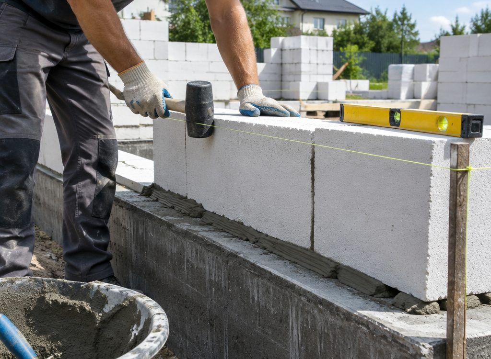
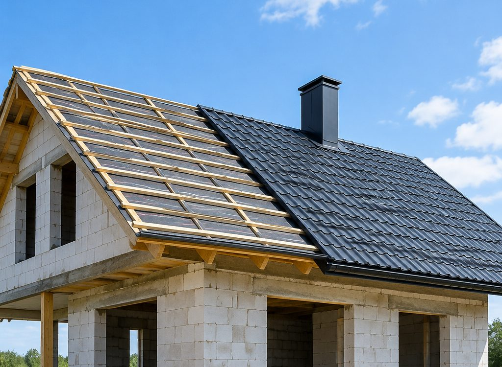

Этапы · интерактив
От разметки
до конька
Семь этапов, каждый со своей техникой и своим контролем. Нажмите на этап, чтобы увидеть, что именно делаем.
Почему одной бригадой
Ответственность
не сдаётся по этапам
Классическая история: фундамент делали одни, стены другие, и когда пошла трещина, каждый кивает на предыдущего. У нас весь цикл в одних руках, поэтому узлы стыкуются, а не «передаются».
Второй плюс — сроки. Техника и транспорт свои: не нужно ждать, когда освободится экскаватор или машина под блоки.

Состав
Что входит в цикл
Монолит
Разметка, земляные работы, подушка, опалубка, армирование, заливка и уход за бетоном. Грунт вывозим своим транспортом.
Стены и перекрытие
Кладка из блока или кирпича, монолитные участки, армопояс, перекрытие и закладные под коммуникации.
Кровля
Стропильная система, пирог, покрытие, водосток и подшивка свесов. Узлы считаем до начала монтажа.
Вопросы
Про стройку целиком
Вы делаете только фундамент или дом целиком
И то, и другое. Можем залить фундамент и уйти, а можем вести объект до кровли: стены, армопояс, перекрытие, стропила, покрытие, водосток. Одной бригадой проще: не нужно пересдавать объект между подрядчиками.
Что входит в фундамент под ключ
Разметка, земляные работы, подушка, опалубка, армирование, заливка, уход за бетоном и распалубка. Грунт вывозим своим транспортом.
Почему важна своя опалубка
Аренда щитов — это простой в графике и доплата за дни. Со своей опалубкой мы выходим на объект в срок и не зависим от того, когда её привезут.
Считаете ли глубину под грунт
Да. Заглубление зависит от грунта, уровня грунтовых вод и промерзания, а не от «стандарта». Поэтому сначала смотрим участок.
Можно ли заказать только перевозку или экскаватор
Да, направления работают и отдельно. Часто так и удобнее: техника уже на объекте, когда начинается фундамент.
Эвакуатор — это ваш транспорт
Да, свой эвакуатор. Возим легковые, кроссоверы, мотоциклы и технику. Скажите, что с машиной: от этого зависит способ погрузки.
Работаете ли за пределами Гродно
Гродно и область. Дальние объекты и перевозки обсуждаем отдельно: зависит от расстояния и загрузки.
Есть ли гарантия
На бетонные работы и кровлю даём гарантию, срок фиксируем при сдаче объекта.
Заявка
Обсудить дом
Скажите площадь и этажность — посчитаем этапы и сроки.
